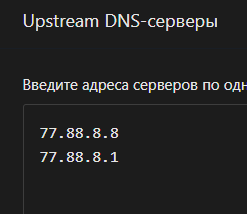
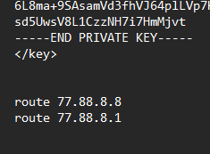
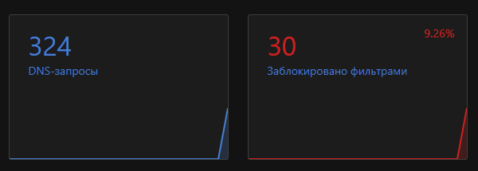
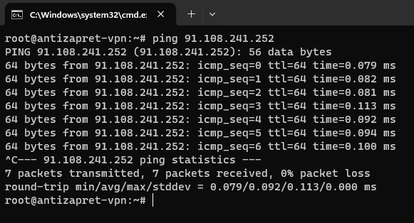
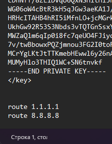
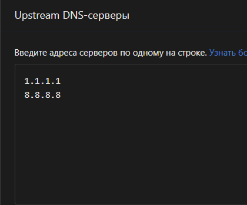

Здравствуйте, хотел бы узнать могу ли я поставить Adguard Home вместе с Home Assistant? Или Adguard нужно ставить где стоит сервер с Antizapret?
Дома стоит сервер с Home Assistant с дополнением Adguard
Без разницы, где стоит AGH, при условии, что AGH в качестве апстрима использует сервер антизапрета. Главное - кто в итоге резолвит запросы, и это должен быть антизапрет. А между антизапретом и клиентами можно располагать промежуточные серверы в этой цепочке.
Пример: допустим, VPN-туннель Antizapret у вас поднят на домашнем роутере с адресом 192.168.1.1, а AGH висит на машине в этой же домашней локалке с адресом 192.168.1.5 на 53 порту.
- на клиентах вы получаете адрес DNS по DHCP от роутера, в нашем примере
192.168.1.1. Никаких сторонних DNS на клиентах указано быть не должно. - в настройках DNS на роутере вы указываете адрес и порт, где у вас поднят AGH, в нашем примере это
192.168.1.5:53 - в настройках AGH вы указываете какие-нибудь публичные серверы в качестве апстрима, допустим,
8.8.8.8и77.88.8.8. Это должны быть классические DNS-серверы, НЕ DoH/DoT/DNSCrypt. - в настройки VPN на роутере вы добавляете строчки
route 8.8.8.8
route 77.88.8.8
(строго те же адреса, что и на предыдущем шаге)
Таким образом, когда клиенту нужно отрезолвить домен, он обращается к DNS-серверу роутера → тот обращается к AGH → AGH обращается к 8.8.8.8 и 77.88.8.8 → благодаря директивам route ... запросы к 8.8.8.8 и 77.88.8.8 направляются в VPN-туннель → там их перехватывает DNS антизапрета (который специально настроен таким образом, чтобы перехватывать все DNS-запросы) и отвечает на них → ответ по той же цепочке доставляется обратно клиенту. Результат: запрос клиента отрезолвил antizapret.
У меня роутер находиться на адресе 192.168.50.1, а raspberry pi с Home Assistant и дополнением Adguard Home на 192.168.50.206. Я так понял что мне нужно в настройках Adguard выбрать какой DNS использовать и добавить route xx.xx.xx в конфиг файл VPN?
И на роутере указать, что запросы DNS резолвить через 192.168.50.206. В общем, как я и написал, просто локальные адреса (роутера и raspberry pi) у вас иные. А общая схема такая же.
Спасибо Вам большое)
DNS запросы проходят, а реклама почему то не блокируется. Роутер не даёт указать порт

{kind=link}

Если порт 53, то можно и не указывать.
DNS запросы проходят, а статистика общего числа запросов в AGH растёт?
Ну и не всю рекламу можно так заблокировать. Например, если реклама грузиться с того же домена, что и контент, то её можно лишь скрыть уже в браузере косметическими фильтрами, а средствами DNS её никак не заблокировать, иначе контент тоже будет недоступен.

когда выключаю VPN, то реклама блокируется. Проверял на сайтах по просмотру фильмов один из них lordfilm
Если VPN включен, то число в левом столбце (синий) растёт при сёрфинге?
да, но реклама не блокируется
Странно. Скорее всего, при подключении VPN роутер игнорирует настроенный DNS и использует то, что прилетело от VPN-сервера, поэтому Adguard остаётся не у дел. Но числа расти не должны в таком случае.
Вариантов я вижу два:
- либо где-то в настройках VPN имеется опция, позволяющая не заменять настройки DNS на те, что прилетают от сервера (например, в прошивке Padavan такая опция есть, а как там в современных асусах (судя по интерфейсу роутера это асус?) с этим, я не помню)
- либо в настройках LAN → DHCP прописать адрес вашего Adguard (192.168.50.206) в поле “DNS” (и переподключить/перезагрузить клиентское устройство, чтобы оно запросило актуальные настройки по DHCP)
Хотел бы задать вопрос уже не относившийся к Adguard Home. Я видел сообщение как создатель антизапрета говорил, чтобы антизапрет правильно работал нужно в роутере поставить любой другой DNS, чтобы не было страницы заглушки. Нужно ли в кончиг файле VPN так же прописывать route и DNS которые стоят в роутере?
Где именно они стоят? Если речь о DNS провайдера, то их нужно отключить, а вместо них указать адрес Adguard.
Если без Adguard, то вместо DNS провайдера указывается то, что в конфиге после route.
Да, это роутер ASUS AX4200
Изменять в строке начальный пул адрессов или настройка DNS и WINS?
{kind=link}
Огромное Вам спасибо! Помогло в DHCP прописать DNS от Adguard и всё завелось
Подскажите, пожалуйста, а можно ли Adguard поставить на сервер где стоит Антизапрет? И как это сделать

{kind=link}


{kind=link}
Не заработал. Я все правильно сделал?
Скорее всего, нет, AdguardHome же теперь является апстримом для антизапрета, поэтому из настроек роутера все адреса DNS нужно убрать, включая директивы route. Роутер будет использовать тот адрес DNS, который приходит от сервера в момент поднятия туннеля.
А дальше уже выяснять, как заставить контейнер антизапрета в качестве апстрима использовать Adguard: вопросы об этом лучше задавать в указанной теме, там есть люди, которым это удалось.
Если на сервере где стоит antizapret в файле /etc/systemd/resolved.conf прописаны DNS 1.1.1.1 и 8.8.8.8, то можно их указать так же в Adguard Home? Будет ли корректно обрабатывать запросы без конфликтов? Речь сейчас про Adguard на raspberry pi в локальной сети. На VPS мне вариант увы не подошёл
Можно. Пока поднят VPN-туннель, трафик до этих адресов всё равно не дойдёт, потому что будет завёрнут в туннель (при условии, что эти же адреса через route в конфиге ovpn завёрнуты в туннель) и перехвачен DNS Antizapret в контейнере.
Поэтому, пока соблюдается правило “эти адреса должны быть указаны и в директиве route в конфиге”, эти адреса могут быть какими угодно.
А вот когда туннель не поднят (например, сервер помер), тогда обход блокировок, конечно, работать не будет (туннеля же нет), но зато у клиентов будут работать хотя бы незаблокированные сайты, поскольку DNS-запросы будут улетать к 1.1.1.1 и 8.8.8.8.
Большое спасибо. Постоянно выручаете в моих вопросах 
Здравствуйте! Я поменял софт на rpi4 и теперь там стоит docker с portainer. Могу ли я поднять Adguard Home через докер в локальной сети с флагом --net=host и использовать его корректно?
Не знаю, я докером в жизни не пользовался.
У меня к нему, вообще, не очень хорошее отношение, потому что докер суют везде, туда, где он и не нужен. Например, я хочу поднять Tiny Tiny RSS, а там написано, мол, единственно поддерживаемый способ установки - через докер. А зачем мне докер? Я разве собираюсь каждый день развёртывать кучу инстансов? Мне всего лишь надо однократно поднять один экземпляр на своем сервере, и раньше это можно было сделать, установив руками базу данных, PHP и веб-сервер, а теперь отчего-то “ехал докер через докер”.
Для каких-то задач, наверное, докер хорош, но, перефразируя известную поговорку, “когда у тебя в руках докер, всё вокруг становится контейнером” - вот это нехорошо.
Думаю, Докер используют, чтобы не путаться в зависимостях, потому что разные проекты могут требовать nginx-ы разных версий. Также Докер – это устанвка “из коробки”, не нужно список зависимостей тянуть из репозиториев выбранного вами дистрибутива, в которых может и не оказаться какого-то требуемого пакета.
Мой ответ может быть некачественным, т.к. я сам докер почти не использовал.
Про Docker